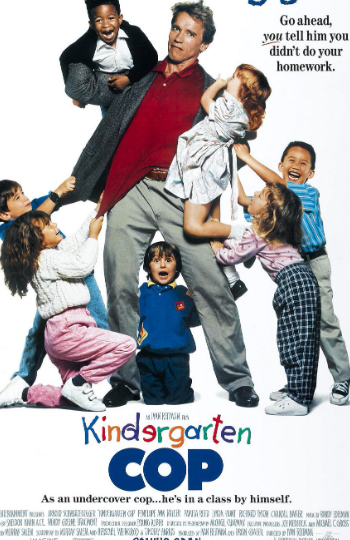

Junior
Director: Ivan Reitman
Alex Hesse (Arnold Schwarzenegger) and Larry Arbogast (Danny DeVito) are working on a new drug which will reduce the chances of a woman's body rejecting her baby, and thus causing a miscarriage. When their research funding is withdrawn, and human experimentation is denied to them, they decide to test the drug by briefly impregnating Hesse. However, Hesse becomes attached to his unborn baby.

Recommendations

Kindergarten Cop
A tough cop must pose as a kindergarten teacher in order to locate a dangerous criminal's ex-wife, who may hold the key to putting him behind bars.

Last Action Hero
With the help of a magic ticket, a young movie fan is transported into the fictional world of his favorite action movie character.

Baby Mama
A successful, single businesswoman who dreams of having a baby discovers she is infertile and hires a working class woman to be her unlikely surrogate.